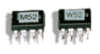
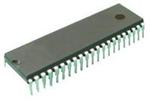
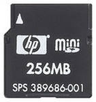
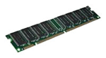

2.10.1. Общие характеристики электронной памяти
Память, как и следует из ее названия, предназначена для запоминания, хранения каких-то массивов информации, проще говоря, наборов, таблиц, групп цифровых кодов. Каждый код хранится в отдельном элементе памяти, называемом ячейкой памяти. Основная функция любой памяти как раз и состоит в выдаче этих кодов на выходы микросхемы по внешнему запросу. А основной параметр памяти – это ее объем, то есть количество кодов, которые могут в ней храниться, и разрядность этих кодов.
Микросхемы памяти (или просто память, или запоминающие устройства – ЗУ, английское "Memory") представляют собой следующий шаг на пути усложнения цифровых микросхем по сравнению с микросхемами, рассмотренными ранее. Память – это всегда очень сложная структура, включающая в себя множество элементов. Правда, внутренняя структура памяти – регулярная, большинство элементов одинаковые, связи между элементами сравнительно простые, поэтому функции, выполняемые микросхемами памяти, не слишком сложные.
Для обозначения количества ячеек памяти используются следующие специальные единицы измерения:
- 1К — это 1024 или 210 (читается "кило-");
- 1М — это 1048576 или 220 (читается "мега-");
- 1Г — это 1073741824 или 230 (читается "гига-").
Принцип организации памяти записывается следующим образом: сначала пишется количество ячеек, а затем через знак умножения (х) — разрядность кода, хранящегося в одной ячейке. Например, организация памяти 64Кх8 означает, что память имеет 64К (то есть 65536) ячеек и каждая ячейка — восьмиразрядная. А организация памяти 4Мх1 означает, что память имеет 4М (то есть 4194304) ячеек, причем каждая ячейка имеет всего один разряд.
Общий объем памяти измеряется в байтах (килобайтах = Кбайт, мегабайтах = Мбайт, гигабайтах = Гбайт) или в битах (килобитах = Кбит, мегабитах = Мбит, гигабитах = Гбит).
В зависимости от способа занесения (записи) информации и от способа ее хранения, микросхемы памяти разделяются на следующие основные типы:
Постоянная память (ПЗУ – постоянное запоминающее устройство, ROM – Read Only Memory – память только для чтения), в которую информация заносится один раз на этапе изготовления микросхемы. Такая память называется еще масочным ПЗУ. Информация в памяти не пропадает при выключении ее питания, поэтому ее еще называют энергонезависимой памятью.

Программируемая постоянная память (ППЗУ – программируемое ПЗУ, PROM – Programmable ROM), в которую информация может заноситься пользователем с помощью специальных методов (ограниченное число раз). Информация в ППЗУ тоже не пропадает при выключении ее питания, то есть она также энергонезависимая. ППЗУ делятся на репрограммируемые или перепрограммируемые ПЗУ (РПЗУ, EPROM — Erasable Programmable ROM), то есть допускающие стирание и перезапись информации, и однократно программируемые ПЗУ. В свою очередь, РПЗУ делятся на ПЗУ, информация в которых стирается электрическими сигналами (EEPROM — Electrically Erasable Programmable ROM), и на ПЗУ, информация в которых стирается ультрафиолетовым излучением через специальное прозрачное окошко в корпусе микросхемы (собственно EPROM — Erasable Programmable ROM).
Флэш-память (Flash-memory), представляющей собой ППЗУ с многократным электрическим стиранием и перезаписью информации. Можно считать, что флэш-память занимает промежуточное положение между ПЗУ и ОЗУ.
Оперативная память (ОЗУ – оперативное запоминающее устройство, RAM – Random Access Memory – память с произвольным доступом), запись информации в которую наиболее проста и может производиться пользователем сколько угодно раз на протяжении всего срока службы микросхемы. Информация в памяти пропадает при выключении ее питания.